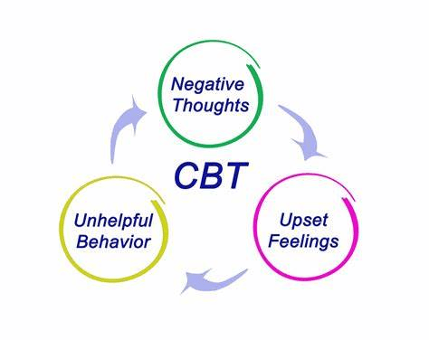

About CBT
Cognitive behavior therapy is a structured, short-term, cognitive-oriented psychotherapy developed by A.T. Beck in the 60s, mainly for depression, anxiety and other mental illnesses and psychological problems caused by irrational cognition. Its main focus is on the patient's unreasonable cognition, and changes the patient's perception and attitude towards the patient, people or things to change the psychological problem.
Mental health science
- Mental health is closely related to physical health.
- Mental health problems are not uncommon.
- Maintaining good mental health is a multifaceted effort.
- Mental health issues can be improved in a number of ways.
- Caring for mental health is not only an individual's responsibility, but also a society's responsibility.
techniques
CBT uses a variety of techniques, including:
- Cognitive restructuring
- Behavioral activation
- Exposure therapy
- Mood regulation
Contact us
We are a team of NZ school psychologists who have developed a new cognitive behaviour therapy approach specific to NZ
If you would like more information about treating stress, please send an email to: info@cbtwebsite.com